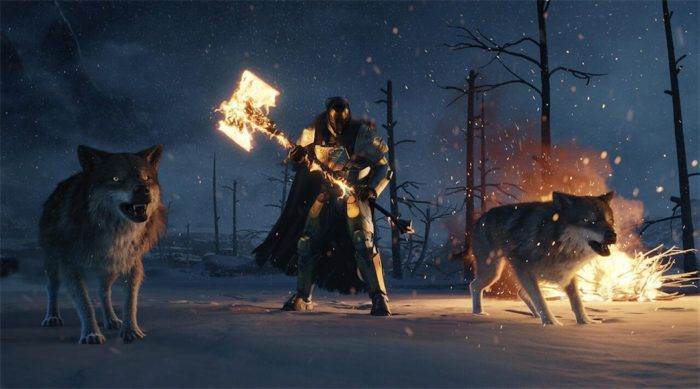
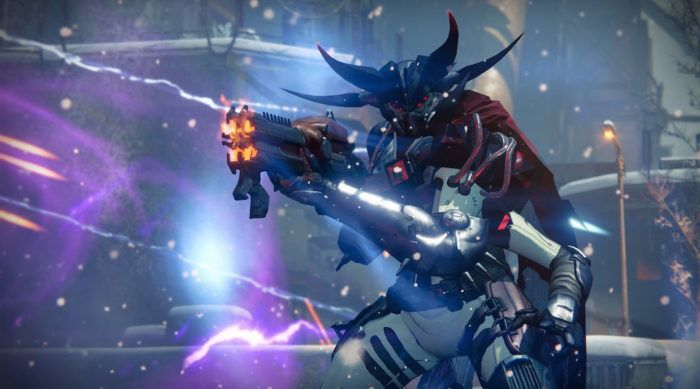
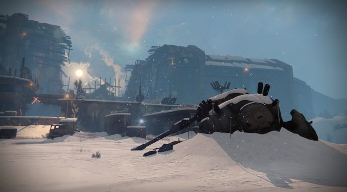

Get the full lowdown on everything related to Destiny‘s fall 2016 expansion, Rise of Iron, from the new story and multiplayer to the next raid and gear.
Destiny: Rise of Iron is set to launch September 20, 2016. After a string of leaks that revealed the expansion ahead of what Bungie intended, Destiny‘s next big expansion was officially revealed. It will contain a new story, strike, multiplayer map and mode, and a new raid. With all that comes a bevy of new weapons and gear to grind for.
Here’s what you can expect from Rise of Iron this fall:
The story of Rise of Iron, as revealed in the expansion’s first trailer, will center around Lord Saladin and the Iron Lords. Destiny fans will know of Lord Saladin as the vendor that appears in the Tower for the monthly PvP event Iron Banner. Keen-eyed players will also recognize the Iron Lords from the event, as the gear earned from Iron Banner directly reference the Iron Lords—names like Felwinter, Colovance, and Efrideet.
In Rise of Iron, the Fallen have uncovered a technological virus called SIVA. The Fallen House of Devils have experimented with SIVA in the Cosmodrome and have spliced their own biology with it, becoming a new enemy faction, the Devil Splicers.
SIVA is also known as Iron’s Bane because in fact it was the Iron Lords who fought against SIVA and banished it in the past. Now, Guardians will have to rise up with Lord Saladin, as he becomes a major PvE character in the world of Destiny, to fight back SIVA and the Fallen Devil Splicers as players become Iron Lord themselves.
Rise of Iron will include a new story campaign featuring a CG cinematics, new story missions, and new questlines. It will also take players to a new Patrol Zone known as The Plaguelands, a forbidden area of Old Russia behind the wall of the Cosmodrome that has been locked off for centuries by the Vanguard and the Iron Lords. Bungie has also said that a considerable amount of time has passed narratively between The Taken King and Rise of Iron. When players spawn into The Plaguelands, they will also be able to traverse the open space back to the Wall and Cosmodrome, which have changed very much from the locations players recognize in-game today.
The Plaguelands will also offer new Patrols and Public Events to complete.